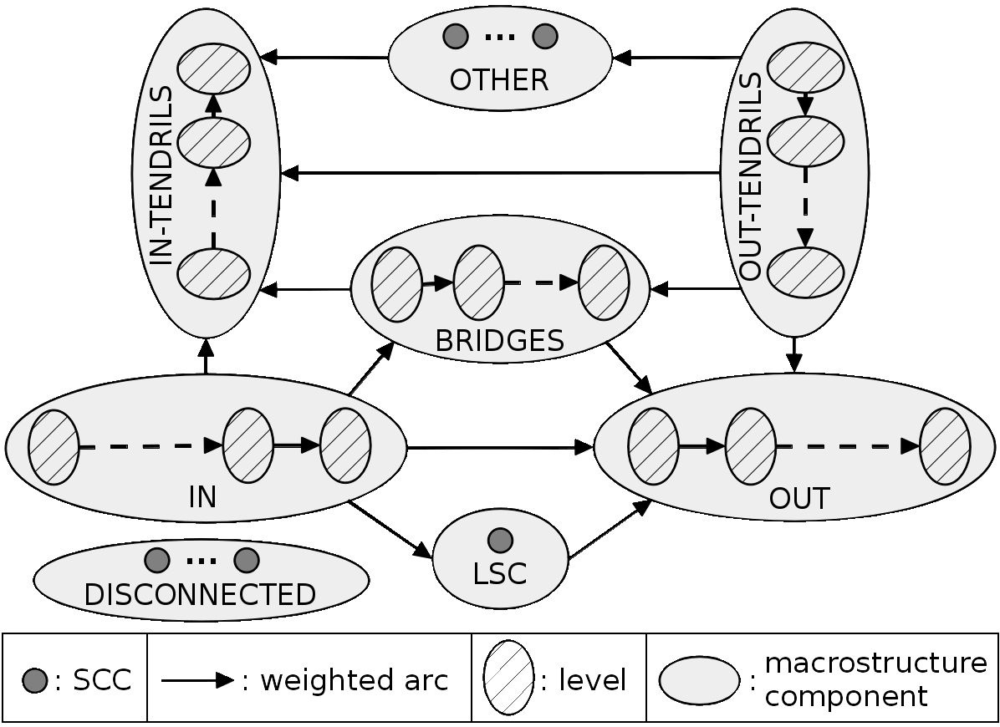
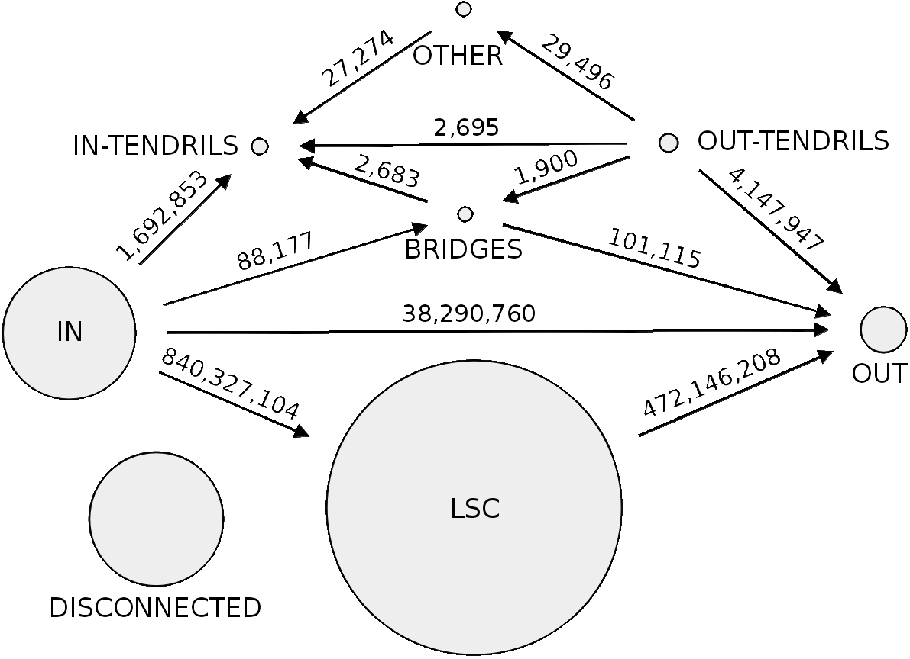

Overview
The goal of this project is to understand information propagation and opinion manipulation. There are two main ways information propagate among people. First, information can propagate using friend relationships. This is typically what happens during a discussion among friends, colleagues, or relatives. In this case, the communication is symmetrical, everybody can participate, but the scale is small. The friend relationship is the one implemented by, for instance, Facebook or LinkedIn. Second, information can propagate using a producer-consumer relationship. This is typically what happens when we watch a news channel, read a newspaper, or attend a live event. In this case, the communication is asymmetrical, consumers cannot directly communicate with the producer, but the scale is large.
Twitter is a widely popular social network that is based on a unidirectional follow relationship. This relationship enables both friends and producer-consumer information propagation. Because we can observe in Twitter the two fundamental ways information propagates, Twitter is the perfect candidate to study information propagation and opinion manipulation.
Contributions
What is the mascrostructure of the Twitter social graph?
Twitter is one of the largest social networks using exclusively directed links among accounts. This makes the Twitter social graph much closer to the social graph supporting real life communications than, for instance, Facebook. Therefore, understanding the structure of the Twitter social graph is interesting not only for computer scientists, but also for researchers in other fields, such as sociologists. However, little is known about how the information propagation in Twitter is constrained by its inner structure.
We conducted an in-depth study of the macroscopic structure of the Twitter social graph unveiling the highways on which tweets propagate, the specific user activity associated with each component of this macroscopic structure, and the evolution of this macroscopic structure with time for the past 6 years. For this study, we crawled Twitter to retrieve all accounts and all social relationships (follow links) among accounts; the crawl completed in July 2012 with 505 million accounts interconnected by 23 billion links. Then, we present a methodology to unveil the macroscopic structure of the Twitter social graph. This macroscopic structure consists of 8 components defined by their connectivity characteristics. Each component group users with a specific usage of Twitter. For instance, we identified components gathering together spammers, or celebrities. Finally, we present a method to approximate the macroscopic structure of the Twitter social graph in the past, validate this method using old datasets, and discuss the evolution of the macroscopic structure of the Twitter social graph during the past 6 years.


How news media use Twitter to attrack traffic?
Online news domains increasingly rely on social media to drive traffic to their website. Yet we know surprisingly little about how social media conversation mentioning an online article actually generates a click to it. Posting behaviors, in contrast, have been fully or partially available and scrutinized over the years. While this has led to to multiple assumptions on the diffusion of information, each were designed or validated while ignoring this important step.
We present a large scale, validated and reproducible study of social clicks -- that is also the first data of its kind -- gathering a month of web visits to online resources that are located in 5 leading news domains and that are mentioned in the third largest social media by web referral (Twitter). Our dataset amounts to 2.8 million posts, together responsible for 75 billion potential views on this social media, and 9.6 million actual clicks to 59,088 unique resources. We design a reproducible methodology, carefully corrected its biases, enabling data sharing, future collection and validation. As we prove, properties of clicks and social media Click-Through-Rates (CTR) impact multiple aspects of information diffusion, all previously unknown. Secondary resources, that are not promoted through headlines and are responsible for the long tail of content popularity, generate more clicks both in absolute and relative terms. Social media attention is actually long-lived, in contrast with temporal evolution estimated from posts or impressions. The actual influence of an intermediary or a resource is poorly predicted by their posting behavior, but we show how that prediction can be made more precise.
Papers
- [SIGMETRICS16]
- Maksym Gabielkov, Arthi Ramachandran, Arnaud Legout, Augustin Chaintreau. Social Clicks: What and Who Gets Read on Twitter? In Proc. of ACM SIGMETRICS 2016, June 14--18, 2016, Antibes Juan-les-Pins, France. download
Press release Science Daily, DailyMail, The Washington Post, Les Échos (archive), 20 minutes, BFM TV (archive), Fortune, New Scientist, PC mag, La Stampa (archive), Le vif, El diaro, Slate.fr. - [SIGMETRICS14]
- Maksym Gabielkov, Ashwin Rao, and Arnaud Legout. Studying Social Networks at Scale: Macroscopic Anatomy of the Twitter Social Graph. In Proc. of ACM SIGMETRICS 2014, June 16--20, 2014, Austin, Texas, USA. download
- [NetSciCom14]
- Giovanni Neglia, Xiuhui Ye, Maksym Gabielkov, and Arnaud Legout. How to Network in Online Social Networks. In Proc. of IEEE NetSciCom'14, May 2, 2014, Toronto, Canada. download
- [CONEXT12stud1]
- Maksym Gabielkov, Arnaud Legout. The Complete Picture of the Twitter Social Graph. In Proc. of ACM CoNEXT'12 Student Workshop, Dec. 10, 2012, Nice, France. download
Members
- Maksym Gabielkov (MSR - INRIA - Microsoft Research - Inria Joint Centre)
- Ashwin Rao (Inria Sophia Antipolis Méditerranée)
- Arnaud Legout (MSR - INRIA - Microsoft Research - Inria Joint Centre)
- Augustin Chaintreau (Columbia University)
- Arthi Ramachandran (Columbia University)
- Giovanni Neglia (Inria Sophia Antipolis Méditerranée)
- Xiuhui Ye (Politecnico di Torino)
Dataset
Twitter Social Graph 2012
We share an anonymized version of the Twitter social graph we collected as described in our SIGMETRICS'2014 publication [GRL_SIG_14]. The dataset we share consists of adjacency lists for the full Twitter social graph and for each of its macro component ([GRL_SIG_14]). Each account ID in the adjacency lists is anonymized.
We make available this dataset for academic studies only. Redistribution and commercial use of this dataset are prohibited. If you are interested in this dataset, please contact Arnaud Legout.
You can refer to this dataset by citing the publication [GRL_SIG_14].
Social Clicks 2016
We share an anonymized version of the dataset on the social clicks we collected as descibed in our SIGMETRICS'2016 publication [GRL_16]
We make available this dataset for academic studies only. Redistribution and commercial use of this dataset are prohibited. If you are interested in this dataset, please contact Arnaud Legout.
You can refer to this dataset by citing the publication [GRL_16].